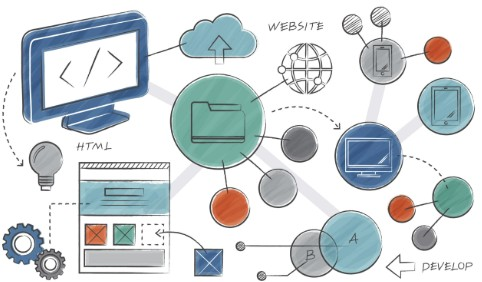

¿Qué es la innovación digital?
La innovación digital es el proceso de aplicar tecnologías emergentes para transformar la manera en que las personas y las organizaciones resuelven problemas, se comunican y generan valor.
Áreas de aplicación
Este portal explora cinco áreas principales: Inteligencia Artificial, Internet de las Cosas, Ciberseguridad, desarrollo de Software y Robótica.
Impacto
Estas tecnologías impactan sectores como la salud, la industria, la educación y los
servicios financieros, cambiando procesos que antes tomaban días ahora
minutos.
Conceptos clave
Inteligencia Artificial: sistemas capaces de aprender de datos.
IoT (Internet of Things): dispositivos conectados que intercambian información en tiempo real.
Ciberseguridad: conjunto de prácticas para proteger sistemas y datos.
Big Data1: manejo de grandes volúmenes de información.
Nota: los conceptos se amplían en la sección de Tecnologías.
Explora

